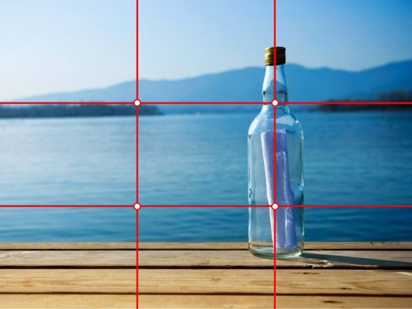

The rule of thirds
What is the rule of thirds?
The rule of thirds describes a basic compositional structure of a photograph. Taking any image, you can split it into 9 segments by using 3 vertical and 3 horizontal lines.

How to practice The rule of thirds?
To begin, a gridded overlay in the viewfinder is available on a variety of cameras. In fact, I have yet to come across a camera that does not have this capability – even iPhones! So go into your camera's menu and see if a compositional help overlay is available. This should make it easier for you to write when on the go. Secondly, when you’re cropping your photos in your editing software, you should be able to enable the same overlay on the cropping tool. This can be done in Photoshop, as well as Lightroom and Luminar.


In Conclusion
When you're first learning the rule of thirds, I recommend experimenting with your composition. Do not only stick to this compositional style, but also do not ignore it. When you're faced with a scene, play with shooting it with and without the rule to see which works best. The rule of thirds is a fantastic compositional tool for quickly improving a photo, and making it more pleasing to view. However, it’s not the “make or break” of a photo, by any stretch of the imagination.
